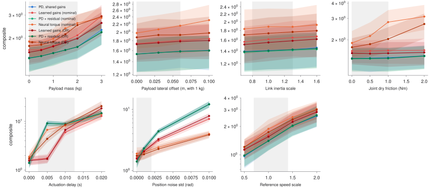
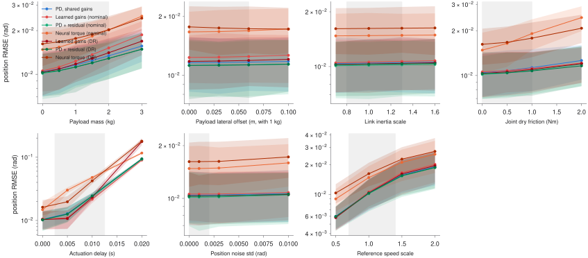

Where do the controllers of Milestone 2, trained on the nominal model, degrade when the plant's dynamics change, and does randomizing the model's dynamics during training (DR) recover performance, including at levels and combinations outside the randomization range? The factors are payload mass and centre of mass, link inertia, joint dry friction, actuation delay, observation noise and reference speed (ADR 0004).
Every factor is swept one at a time on the test split (6 cases per regime and level, all six regimes), plus 12 random combinations of all factors. The plant is perturbed; the conventional baseline keeps its nominal gravity model, as on a real robot with an unknown payload. DR variants are trained with the same protocol as Milestone 2 but with the model's payload, inertia, friction, damping, latency and observation noise sampled every iteration from the training ranges of ADR 0004, which lie strictly inside the swept levels. One seed per variant.
Composite and position RMSE against each factor level, averaged over regimes and cases. The grey band marks the DR training range; levels outside it are held out.


| Factor | Controller | Composite at nominal | Extreme level | Composite at extreme | Ratio | Diverged cases (all levels) |
|---|---|---|---|---|---|---|
| Payload mass (kg) | PD, shared gains | 1.41 | 3.0 | 2.31 | 1.64x | 0 |
| Payload mass (kg) | Learned gains (nominal) | 1.62 | 3.0 | 2.95 | 1.82x | 0 |
| Payload mass (kg) | PD + residual (nominal) | 1.4 | 3.0 | 2.24 | 1.60x | 0 |
| Payload mass (kg) | Neural torque (nominal) | 1.89 | 3.0 | 2.86 | 1.52x | 0 |
| Payload mass (kg) | Learned gains (DR) | 1.56 | 3.0 | 2.61 | 1.68x | 0 |
| Payload mass (kg) | PD + residual (DR) | 1.41 | 3.0 | 2.21 | 1.57x | 0 |
| Payload mass (kg) | Neural torque (DR) | 1.74 | 3.0 | 2.93 | 1.69x | 0 |
| Payload lateral offset (m, with 1 kg) | PD, shared gains | 1.54 | 0.1 | 1.6 | 1.04x | 0 |
| Payload lateral offset (m, with 1 kg) | Learned gains (nominal) | 1.74 | 0.1 | 1.84 | 1.06x | 0 |
| Payload lateral offset (m, with 1 kg) | PD + residual (nominal) | 1.54 | 0.1 | 1.6 | 1.04x | 0 |
| Payload lateral offset (m, with 1 kg) | Neural torque (nominal) | 1.98 | 0.1 | 2.31 | 1.17x | 0 |
| Payload lateral offset (m, with 1 kg) | Learned gains (DR) | 1.73 | 0.1 | 1.81 | 1.05x | 0 |
| Payload lateral offset (m, with 1 kg) | PD + residual (DR) | 1.53 | 0.1 | 1.6 | 1.04x | 0 |
| Payload lateral offset (m, with 1 kg) | Neural torque (DR) | 1.88 | 0.1 | 1.98 | 1.05x | 0 |
| Link inertia scale | PD, shared gains | 1.41 | 1.6 | 1.46 | 1.03x | 0 |
| Link inertia scale | Learned gains (nominal) | 1.62 | 1.6 | 1.67 | 1.04x | 0 |
| Link inertia scale | PD + residual (nominal) | 1.4 | 1.6 | 1.43 | 1.02x | 0 |
| Link inertia scale | Neural torque (nominal) | 1.89 | 1.6 | 1.93 | 1.02x | 0 |
| Link inertia scale | Learned gains (DR) | 1.56 | 1.6 | 1.62 | 1.04x | 0 |
| Link inertia scale | PD + residual (DR) | 1.41 | 1.6 | 1.44 | 1.03x | 0 |
| Link inertia scale | Neural torque (DR) | 1.74 | 1.6 | 1.79 | 1.03x | 0 |
| Joint dry friction (Nm) | PD, shared gains | 1.41 | 2.0 | 1.48 | 1.05x | 0 |
| Joint dry friction (Nm) | Learned gains (nominal) | 1.62 | 2.0 | 1.64 | 1.02x | 0 |
| Joint dry friction (Nm) | PD + residual (nominal) | 1.4 | 2.0 | 1.47 | 1.05x | 0 |
| Joint dry friction (Nm) | Neural torque (nominal) | 1.89 | 2.0 | 3.11 | 1.65x | 0 |
| Joint dry friction (Nm) | Learned gains (DR) | 1.56 | 2.0 | 1.58 | 1.01x | 0 |
| Joint dry friction (Nm) | PD + residual (DR) | 1.41 | 2.0 | 1.48 | 1.05x | 0 |
| Joint dry friction (Nm) | Neural torque (DR) | 1.74 | 2.0 | 2.7 | 1.55x | 0 |
| Actuation delay (s) | PD, shared gains | 1.41 | 0.02 | 14.3 | 10.14x | 0 |
| Actuation delay (s) | Learned gains (nominal) | 1.62 | 0.02 | 12.9 | 7.97x | 0 |
| Actuation delay (s) | PD + residual (nominal) | 1.4 | 0.02 | 14.3 | 10.24x | 0 |
| Actuation delay (s) | Neural torque (nominal) | 1.89 | 0.02 | 14.1 | 7.48x | 0 |
| Actuation delay (s) | Learned gains (DR) | 1.56 | 0.02 | 18.4 | 11.84x | 0 |
| Actuation delay (s) | PD + residual (DR) | 1.41 | 0.02 | 14.8 | 10.50x | 0 |
| Actuation delay (s) | Neural torque (DR) | 1.74 | 0.02 | 20.5 | 11.76x | 0 |
| Position noise std (rad) | PD, shared gains | 1.41 | 0.01 | 12.1 | 8.55x | 0 |
| Position noise std (rad) | Learned gains (nominal) | 1.62 | 0.01 | 6.94 | 4.29x | 0 |
| Position noise std (rad) | PD + residual (nominal) | 1.4 | 0.01 | 12 | 8.62x | 0 |
| Position noise std (rad) | Neural torque (nominal) | 1.89 | 0.01 | 3.96 | 2.10x | 0 |
| Position noise std (rad) | Learned gains (DR) | 1.56 | 0.01 | 7.78 | 5.00x | 0 |
| Position noise std (rad) | PD + residual (DR) | 1.41 | 0.01 | 12.1 | 8.58x | 0 |
| Position noise std (rad) | Neural torque (DR) | 1.74 | 0.01 | 3.83 | 2.20x | 0 |
| Reference speed scale | PD, shared gains | 1.41 | 2.0 | 2.57 | 1.82x | 0 |
| Reference speed scale | Learned gains (nominal) | 1.62 | 2.0 | 2.88 | 1.78x | 0 |
| Reference speed scale | PD + residual (nominal) | 1.4 | 2.0 | 2.64 | 1.89x | 0 |
| Reference speed scale | Neural torque (nominal) | 1.89 | 2.0 | 3.05 | 1.62x | 0 |
| Reference speed scale | Learned gains (DR) | 1.56 | 2.0 | 2.83 | 1.82x | 0 |
| Reference speed scale | PD + residual (DR) | 1.41 | 2.0 | 2.61 | 1.86x | 0 |
| Reference speed scale | Neural torque (DR) | 1.74 | 2.0 | 3 | 1.73x | 0 |
| Controller | Mean composite | 95% CI | Worst combination | Diverged cases |
|---|---|---|---|---|
| PD, shared gains | 7.16 | [5.44, 8.65] | 10.6 | 0 |
| Learned gains (nominal) | 4.02 | [3.2, 4.97] | 6.75 | 0 |
| PD + residual (nominal) | 7.06 | [5.33, 8.6] | 9.94 | 0 |
| Neural torque (nominal) | 5.8 | [4.47, 7.18] | 9.61 | 0 |
| Learned gains (DR) | 4.15 | [3.32, 5.09] | 7.35 | 0 |
| PD + residual (DR) | 7.12 | [5.44, 8.55] | 9.94 | 0 |
| Neural torque (DR) | 4.13 | [3.08, 5.42] | 9.81 | 0 |
Add actuation delay to the evaluation protocol's nominal plant (a real robot has several milliseconds) and to the Milestone 1 tuning, so that conventional gains are tuned with the delay they will face; the current shared gains are not a fair representative of a deployable PD once delay exists. Re-run the sweeps for the protocol v2 controllers, and test the history ablation (no history input) to see whether the learned controllers' delay and noise robustness comes from the history or from the gain level.